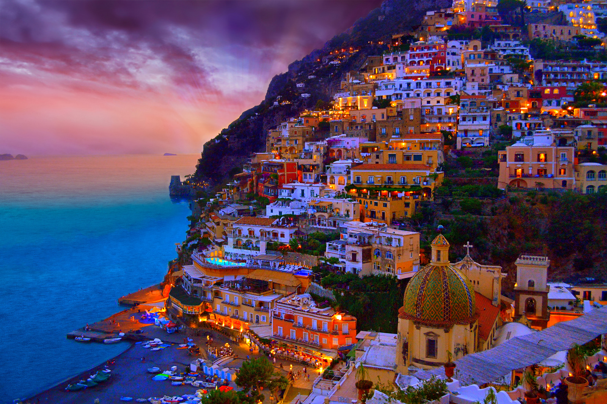
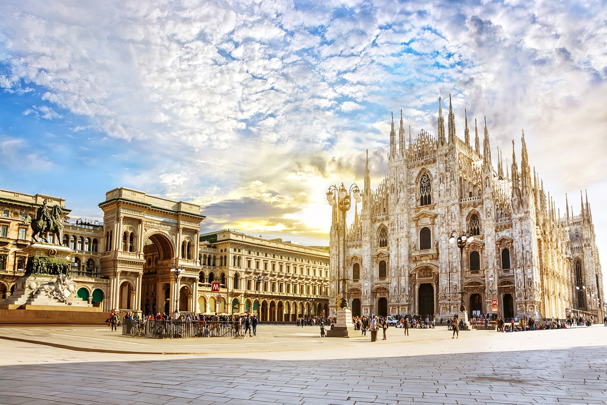

{kind=link}
Amalfi Coast, Italy
Mediterranean paradise of cliffs and colorful villages
Why The Amalfi Coast Is Special To Me
The Amalfi Coast is special to me because of its stunning landscapes and charming coastal towns. The colorful villages perched on cliffs, the crystal-clear waters, and the delicious Italian food make it a perfect blend of natural beauty and culture. It's a place where I can relax and soak in the breathtaking views.
How to Get There
Airports:
- Leonardo da Vinci International Airport (FCO): The main international gateway to Rome, located about 30 minutes from the city center.
- Ciampino Airport (CIA): A smaller airport mainly serving low-cost airlines, about 40 minutes from central Rome.
Public Transportation:
- Metro: The Rome Metro is one of the easiest ways to get around the city, especially for major attractions.
- Buses: Rome's bus network covers many parts of the city, but traffic can be heavy during rush hours.
- Taxis & Ride-Sharing: Taxis are readily available but can be costly. Ride-sharing services like Uber are also available.
Other places to visit in Italy

{kind=link}
Positano
The iconic cliffside village with colorful houses cascading down to the sea.

Path of the Gods
A breathtaking hiking trail with panoramic views of the coastline and Mediterranean Sea.

Villa Rufolo Gardens, Ravello
Lush gardens with spectacular views that inspired composer Richard Wagner.

{kind=link}
Milan
Italy’s fashion capital, home to the stunning Duomo di Milano and Leonardo da Vinci’s The Last Supper.